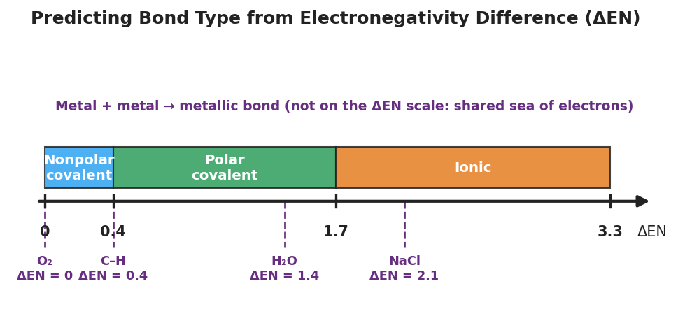

01 Phenomenon
Two identical glasses of water sit on the table. Stir a spoonful of table salt into the first — it dissolves and disappears completely. Stir a spoonful of cooking oil into the second — it beads up and floats in its own layer, refusing to mix no matter how hard you stir. Same water. Same stirring. Two completely different outcomes. The difference is in the kind of bond that holds each substance together.
02 Driving question
Why does salt dissolve in water but oil does not?
03 Notice & wonder
| I notice… | I wonder… |
|---|---|
Turn & Talk #1: Salt (NaCl) is a metal joined to a nonmetal. Oil is mostly carbon and hydrogen — two nonmetals — joined together. Using only what kinds of elements are involved, predict in one sentence which substance is held together by electron transfer and which by electron sharing. What clue are you using?
04 Initial model
Before your teacher names the process: electronegativity is how strongly an atom pulls on shared electrons. Use the Reference Tables to find each value, then subtract the smaller from the larger to get the difference (ΔEN). Which pair has the bigger difference?
Electronegativity values: Na = 0.9, Cl = 3.0, O = 3.5
Your work:
- Na and Cl: ΔEN = ______ − ______ = ____________
- O and O (in O₂): ΔEN = ______ − ______ = ____________
Which pair has the larger electronegativity difference? _______________
In that pair, do you think the electrons are shared evenly, shared unevenly, or transferred completely? _______________
What two pieces of information did you need (one from the formula, one from the Reference Tables)? _______________________________________________
05 Investigate
Part 1 — ABCs: Sort by element type before you calculate
Before any numbers, use only the Periodic Table. For each pair, mark whether each element is a metal or a nonmetal, then predict whether the pair will transfer electrons (likely ionic), share electrons (likely covalent), or — if both are metals — pool electrons in a sea (metallic).
| Pair | Element types | My prediction: transfer / share / sea? |
|---|---|---|
| Na and Cl | metal + nonmetal | |
| O and O | nonmetal + nonmetal | |
| H and O | nonmetal + nonmetal | |
| Cu and Cu | metal + metal |
After Part 2, return and check: which prediction surprised you?
After checking: _______________________________________________
Part 2 — Predict bond type from ΔEN
For each pair, fill in the metal/nonmetal label, the electronegativity (EN) values, the difference ΔEN (larger − smaller), and the predicted bond type using the number line.
Electronegativity values: Na = 0.9, Cl = 3.0, O = 3.5, H = 2.1, Cu = 1.9
Pair A: Na–Cl (table salt)
| Element | Metal/Nonmetal | EN | ΔEN | Predicted bond |
|---|---|---|---|---|
| Na | 0.9 | |||
| Cl | 3.0 | **___** | **___** |
Pair B: O–O (in O₂)
| Element | Metal/Nonmetal | EN | ΔEN | Predicted bond |
|---|---|---|---|---|
| O | 3.5 | |||
| O | 3.5 | **___** | **___** |
Pair C: H–O (in H₂O)
| Element | Metal/Nonmetal | EN | ΔEN | Predicted bond |
|---|---|---|---|---|
| H | 2.1 | |||
| O | 3.5 | **___** | **___** |
Pair D: Cu–Cu (in copper metal)
| Element | Metal/Nonmetal | EN | ΔEN | Predicted bond |
|---|---|---|---|---|
| Cu | 1.9 | |||
| Cu | 1.9 | **___** | **___** |
Part 3 — Reading the number line
Look at figures/bond_type_number_line.png:

Which band does NaCl (ΔEN = 2.1) fall in? _______________
O₂ (ΔEN = 0) and Cu–Cu (ΔEN = 0) both have the same difference. Why is one covalent and the other metallic? Use element types in your answer.
- Where is the metallic bond on the number line — and why is it placed there?
06 Make it make sense
For each pair below, predict the bond type. Show element types, the ΔEN calculation, and the band it lands in. These are the same pairs you practiced in the Investigation — confirm your work here. Electronegativity values: Na = 0.9, Cl = 3.0, O = 3.5, H = 2.1, Cu = 1.9.
1. Na–Cl
| Element | Metal/Nonmetal | EN | ΔEN | Predicted bond |
|---|---|---|---|---|
| Na | 0.9 | |||
| Cl | 3.0 | **___** | **___** |
2. H–O (in H₂O)
| Element | Metal/Nonmetal | EN | ΔEN | Predicted bond |
|---|---|---|---|---|
| H | 2.1 | |||
| O | 3.5 | **___** | **___** |
3. Cu–Cu (in copper metal)
| Element | Metal/Nonmetal | EN | ΔEN | Predicted bond |
|---|---|---|---|---|
| Cu | 1.9 | |||
| Cu | 1.9 | **___** | **___** |
4. Multiple choice — which statement is correct? Circle one.
- A. Two metals always form a covalent bond by sharing one pair of electrons.
- B. A large electronegativity difference between a metal and a nonmetal produces an ionic bond.
- C. Electronegativity measures how heavy an atom is.
- D. A ΔEN of 0 always means the bond is metallic.
07 Key vocabulary
- electronegativity
- a measure of how strongly an atom pulls on the shared electrons in a bond; read from the Periodic Table / Reference Tables (fluorine is highest at 4.0; metals are low); the difference in electronegativity between two atoms (ΔEN) predicts whether their bond is ionic or covalent
- ionic bond
- the attraction between oppositely charged ions formed when a metal transfers one or more electrons to a nonmetal; occurs when the electronegativity difference is large (≥ 1.7); produces charged ions (e.g., Na⁺ and Cl⁻ in table salt) that polar water can pull apart
- covalent bond
- a bond formed when two nonmetals share one or more pairs of electrons; occurs when the electronegativity difference is small (< 1.7); even sharing (ΔEN ≈ 0) is nonpolar covalent (e.g., O₂), uneven sharing is polar covalent (e.g., the O–H bonds in water)
Use each term in a sentence about today’s investigation. Do not copy the definition — describe something you actually did or observed.
electronegativity: _______________________________________________ _______________________________________________
ionic bond: _______________________________________________ _______________________________________________
covalent bond: _______________________________________________ _______________________________________________
08 Revise your model
Return to your Initial Model (the Na–Cl and O–O calculations). Add vocabulary labels:
Next to each ΔEN, write the band it falls in on the number line: _______________
Label each bond type (ionic / nonpolar covalent / polar covalent / metallic).
Write a revised appositive sentence for the salt bond:
The bond in sodium chloride — an ionic bond formed because ΔEN = ___ — _______________________________________________
Then finish this Because / But / So sentence:
Salt dissolves in water but oil does not because __________________________________________, but __________________________________________, so __________________________________________.
09 Exit ticket
Electronegativity values: Mg = 1.2, F = 4.0, H = 2.1, Cl = 3.0. Iron (Fe) is a metal.
(a) Predict the bond type in MgF₂. Show element types and the ΔEN calculation, and name the band it falls in.
| Element | Metal/Nonmetal | EN | ΔEN | Predicted bond |
|---|---|---|---|---|
| Mg | ||||
| F | **___** | **___** |
(b) Predict the bond type in HCl. Show element types and the ΔEN calculation, and name the band it falls in.
| Element | Metal/Nonmetal | EN | ΔEN | Predicted bond |
|---|---|---|---|---|
| H | ||||
| Cl | **___** | **___** |
(c) Classify the bond in solid iron (Fe). In one sentence, explain how you know without calculating ΔEN.
10 Explore further
- State Lab: "Bend and Stretch": the NYS-recommended hands-on investigation in which students test substances (e.g., ionic salt, a covalent molecular solid, a metal wire/foil) for properties that track bond type — does it bend/stretch (metallic, malleable), shatter (ionic, brittle), or melt at low temperature (molecular covalent)? Students record observations and infer the bond type from the property pattern, then check their inference against the metal/nonmetal classification and ΔEN. The lab report is the unit assessment for this lesson.
- Bond-type prediction from electronegativity difference: using the Periodic Table / 2025 Reference Tables, students compute ΔEN for a series of element pairs and classify each bond (ionic / polar covalent / nonpolar covalent / metallic). Each student fills a structured table: pair | element types | EN values | ΔEN | predicted bond type. This is the core skill for the NYSSLS bond-type standard and aligns with the number line in `figures/bond_type_number_line.png`.
- Particle-model sort: students match `figures/three_bond_types.png` panels (electron transfer, shared pair, electron sea) to NaCl, O₂, and Cu, explaining what the valence electrons are doing in each.